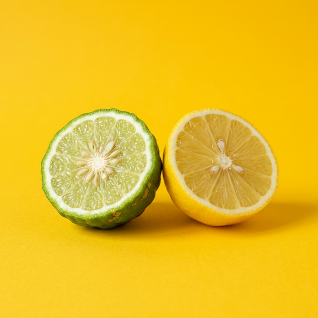

Scent family affinity.
Select the primary notes that define your olfactory signature.

01. CITRUS
Bergamot & Lemon
SELECT
02. FLORAL
Rose & Jasmine
SELECT
03. WOODY
Sandalwood & Cedar
SELECT
04. GOURMAND
Vanilla & Tonka
SELECT